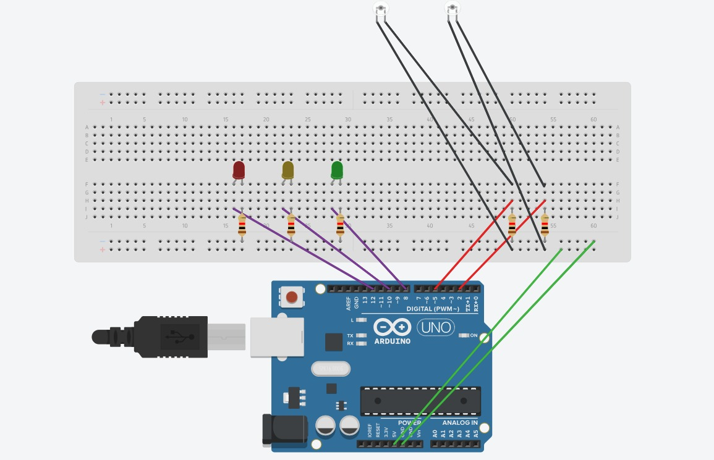

Este projeto foi motivado pela necessidade de monitorar de forma eficiente e prática o nível da água em reservatórios, como cisternas, caixas d'água ou tanques, já que muitas vezes não conseguimos visualizar diretamente se o reservatório está cheio ou vazio, o que pode causar desperdícios ou falta d'água. O objetivo é criar um sistema mais preciso, utilizando múltiplos sensores posicionados em diferentes alturas para indicar o nível da água e enviar notificações diretamente para o celular, notebook ou PC, permitindo o acompanhamento à distância. O projeto se aplica a ambientes onde os reservatórios são fechados ou de difícil acesso, com a implementação de um sistema com sensores e boia que envia sinais eletrônicos quando a água atinge níveis críticos, promovendo uma gestão mais eficiente do recurso e evitando desperdícios e prejuízos.

Líder: Arthur Ferreira
Membros: Andrews Queiroz, Enzo Amorim, Gustavo Veloso e Hilton Resende
| Problemas enfrentados | Como foi resolvido |
| Identaçao do codigo | Encontramos um modelo no site oficial da Robocore, o qual utilizamos como base. |
| Montagem do projeto | Após encontrar um modelo com código semelhante, tivemos uma ideia de como conectar os sensores. |
| Troca de peças defeituosas | Solicitamos ao nosso tutor que realizasse a troca das peças. |